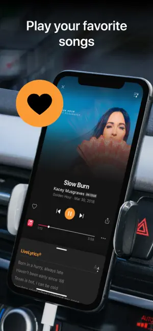

SoundHound∞ 值得掏钱吗？3.99 美元买断前先算清楚这笔账
从定价结构、使用频率到替代方案，把 SoundHound 免费版和付费版的每一分钱掰开来算——三类用户对号入座，三秒决定买不买。
3.99 美元，到底值不值？
我是上个月才开始认真用 SoundHound官网 的。起因很简单：开车时电台放了一首旋律不错的歌，想识曲但手腾不出来，Shazam 必须点按钮，而 SoundHound 能直接语音唤醒。就这样用了两三周，免费版的广告终于让我开始认真考虑一个问题：它的付费版到底值不值得掏钱？
这篇文章就是我给自己算的这笔账。你可以对照自己的使用场景，三秒就能对号入座。
先把定价拆解清楚
SoundHound 的付费方案出奇地简单——只有一个选项：SoundHound∞，一次性买断，3 到 4 美元。没有按月订阅、没有按年付费、没有阶梯档位，就这一档。
但这里有几个容易踩坑的细节：
SoundHound∞ 需要从下载独立获取，它不是内购解锁，而是独立 App。 你在 App Store 或 Google Play 里搜 "SoundHound Infinity"，买的是一个全新的应用。装了之后你手机上会同时有两个 SoundHound——免费版和付费版。付费版没有广告，功能上和免费版完全一致，就是干净。买完把免费版删掉就行。
跨平台授权不互通。 iPhone 上买了 SoundHound∞，换 Android 手机用不了，得再买一次。反过来也一样。同平台内换型号没问题，用同一个商店账号可以重新下载。
没有免费试用。 不像很多订阅制产品给你 7 天试用，SoundHound∞ 买断就是买断，买之前只能靠免费版体验功能本身。
免费版和付费版的功能清单对比其实很无聊——付费版只多了一个东西：没有广告。 LiveLyrics 实时歌词、Hey SoundHound 语音唤醒、哼唱识曲、历史记录、跨设备同步、流媒体平台集成……这些全都是免费的。付费版没有任何功能门槛，纯粹是花钱买干净。
广告到底有多烦？
这决定了付费版对你的价值上限。
SoundHound 免费版的广告是识曲完成后的全屏插屏。场景很具体：你点一下 SoundHound 大按钮（或者说一声 "Hey SoundHound"），App 开始识别，几秒钟后结果出来——然后屏幕中间突然弹出一个广告，挡住了歌曲信息。你得点右上角的 X 才能关掉，回到真正想看的识曲结果页面。
这个场景的烦人程度和你的使用频率正相关。一次识曲本来就是 3 秒完成的事，被广告打断一下，体验落差特别明显。但如果你一次打开 App 连识好几首歌，那广告就是每首歌弹一次，确实会让人想摔手机。
有一点要注意：语音唤醒的操作过程中不会弹广告。 如果你主要在车载场景用 Hey SoundHound 搜歌查歌词，广告可能根本没机会出来。这部分用户可以直接跳过下面的算账环节。
开始算账：三类用户各算各的
轻度用户：一周用不到一次
典型画像：偶尔在商场、咖啡馆、刷抖音时听到一首陌生的歌，掏手机识一下，然后该干嘛干嘛。打开 App 的频率大概是一周一次，甚至更少。
对这类用户来说，免费版完全够用。 一周被广告打断一次，3 秒的事，不值得花 4 美元。一年下来最多被广告打扰 50 次，换算成每次 8 美分——不是说贵，是这点麻烦真的不值得专门花钱解决。
还有一个隐性因素：轻度用户对 "识曲" 这个动作的期待值很低。你只是想知道这首歌叫什么，广告挡一下不影响你看完结果。重度用户对流畅度的追求在轻度用户这里根本不存在。
结论：永远不用付。 把钱省下来，多买一杯奶茶更香。
主力用户：每天打开 1 到 3 次
典型画像：上班路上听播客听到一首不错的插曲、午休在公司放的背景歌想找原曲、下班后开车时电台放的歌忍不住想识一下。每天都会有那么几次场景让你掏手机。
这类用户处在一个尴尬的中间地带。让我们算笔时间账：
假设你每天识 2 首歌，一年就是 730 次。每次被广告打断浪费 3 秒钟（等广告加载 + 点关闭），一年累计浪费 2190 秒，约 36 分钟。36 分钟值 4 美元吗？对大多数人来说，这个比例有点微妙——不算特别值，但也不是完全不值。
但这里有个变量：广告加载速度。 有时候广告秒出秒关，3 秒搞定；有时候网络不好，广告要加载四五秒，加上 X 按钮还没出来你就得等。如果你的网络环境经常慢，实际浪费的时间可能翻倍。
还有一个体验层面的因素：主力用户会逐渐把识曲当成一个 "习惯动作"。习惯动作被反复打断，积累的烦躁感不是单次时间浪费能量化的。就像你每天都要开一个有启动广告的 App——不是广告本身的问题，是每天都要被打断一下的那种腻歪。
结论：看心情。 如果你觉得 "每天被打断几次挺烦的"，4 美元买断换个干净，值。如果你觉得 "也就点一下 X 的事"，再等等——等哪天你被广告烦到忍无可忍了再买，不差这 4 美元。
重度用户：每天 4 次以上，或者有特殊使用场景
典型画像：开车时全靠 Hey SoundHound 免手搜歌、学卡拉 OK 用 LiveLyrics 练歌词、音乐博主持续采集配乐素材。App 是你日常工作流的一部分，一天不打开就觉得少了什么。
对这类用户来说，4 美元的买断简直是白送。
先算量化指标：每天识 4 首歌，一年 1460 次。每次浪费 3 秒，一年累计 4380 秒，约 73 分钟。 一个多小时的生命被广告偷走了——用 4 美元换回来，换算成每小时不到 3.3 美元。这比你打车、买咖啡、甚至买一瓶矿泉水都便宜。
再看特殊场景的刚需：
车载场景。 虽然语音唤醒时不会弹广告，但你停车后回放历史记录、点开识曲详情页时广告还是会出来。更重要的是，SoundHound∞ 买的不只是去广告——它让你在车载场景下更放心，不用担心某一次操作突然被广告打断分散注意力。这不是钱的问题，是安全边际的问题。
LiveLyrics 学歌。 如果你每天用 LiveLyrics 练唱歌，那你肯定会反复打开同一首歌、反复拖动进度条到副歌位置、反复重练。每一次打开识曲结果都弹广告？一周下来你就会崩溃。4 美元买个省心，太值了——具体的 LiveLyrics 操作细节可以去 SoundHound文档 查。
内容采集。 作为音乐博主或播主，你可能一天要识十几首甚至几十首配乐。免费版广告弹到你怀疑人生，而买断之后整个工作流是丝滑的——识曲、打标签、收藏进歌单，一气呵成。
结论：闭眼付。 不用犹豫了，现在打开商店买就是。这个定价对重度用户来说简直是友情价。

不付这笔钱还有什么别的路？
坦白说，替代方案不多，而且各有各的问题。
换 Shazam。 这是最直接的替代。Shazam 的识曲速度确实快，识别准确率在某些场景下比 SoundHound 还高。但 Shazam 没有 LiveLyrics、没有语音唤醒、没有哼唱识曲。如果你当初选 SoundHound 就是冲着这些特色功能来的，那换到 Shazam 等于放弃了你最在意的东西。
降低使用频率。 理论上你可以忍着不每次都识曲，攒几天一起识。但说实话，当你听到一首好听的歌想知道名字的那个瞬间，你是忍不住的。这个方案的执行难度极高，而且本质上是在委屈自己的使用习惯。
等促销。 SoundHound∞ 偶尔会打折，但折扣幅度通常不大，而且没什么规律。如果你不着急用，可以等等——但 "等促销" 本身也是一种时间成本。
灰色手段去广告。 网上确实有修改版、Root 去广告之类的教程。但风险很实在：封号、恶意代码、版本更新后失效。4 美元真的不值得你冒这个险。
最后的结论
我自己最终是买了的。原因很简单：我每天开车至少用 3 次，加上午休和晚上散步时偶尔识一下，一天基本 4 次起步。按上面的算账，我属于重度用户那一档。而且说实话——买完之后第一次用，那种 "点一下按钮直接出结果、没有广告挡着" 的流畅感，让我觉得之前忍了两周真是没必要。
再强调一遍三类用户的判断标准，三秒就能对号入座：
- 一周用不到一次 → 永远不用付，免费版凑合用
- 每天 1 到 3 次 → 看心情，烦到了再买也不迟
- 每天 4 次以上 / 车载 / 学歌 / 内容创作 → 闭眼付，别犹豫
最后说一句题外的：SoundHound 这个定价策略挺聪明的——它没有用订阅制把用户绑住，也没有用功能门槛逼你升级。付费版就是干干净净的 "无广告版"，价格压在一个几乎所有人都能接受的心理阈值以下。这种 "你觉得值就买，不值就继续免费" 的姿态，反而让人掏钱掏得心甘情愿。
如果你之前没怎么用过 SoundHound，可以先下载体验几天——反正免费版没功能限制，体验完再决定要不要为那 4 美元买单。说到资料备份，SoundHound 中文版在 GitHub、Gitee、GitCode 三个仓库都有完整归档，国内用户直接走 Gitee 或 GitCode 更顺手。